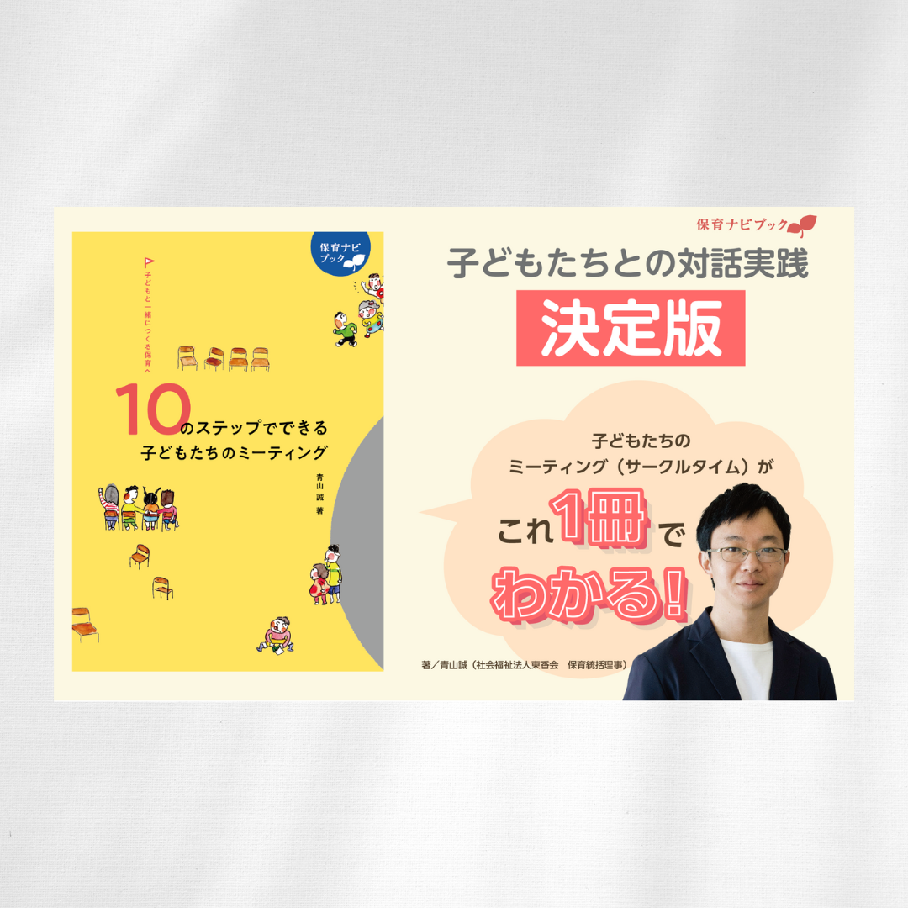

『子どもと一緒につくる保育へ
―10のステップでできる子どもたちのミーティング―』
Design | 仕事制作
書籍『子どもと一緒につくる保育へ─10のステップでできる子どもたちのミーティング─』の Amazon広告を制作しました。
DesignFeature
特徴
-
目的
書籍への関心を高め、購入につなげること。
-
ターゲット
保育者や、子どもに関わる教育関係者
-
制作期間
2025年7月
-
使用ツール
Illustrator/Photoshop
Point
要点
01 情報設計
保育者が「自分のクラスでどう活かせるか」をすぐに想像できるよう、実践書であることが伝わる構成にしました。
短時間の接触でも内容の方向性が伝わるよう情報を整理し、書影を中心にタイトルやキーワードの読みやすさを重視しています。
また、「10のステップで実践できる」という特徴が一目で伝わるようにし、
内容の具体性と取り入れやすさを感じられる設計としました。
02 デザイン
書籍のテーマである「子どもたちとの対話」に合わせ、イラストややわらかいあしらいを取り入れました。 親しみやすさと安心感を意識し、保育者が自分の保育に取り入れるイメージを持てるようなデザインにしています。